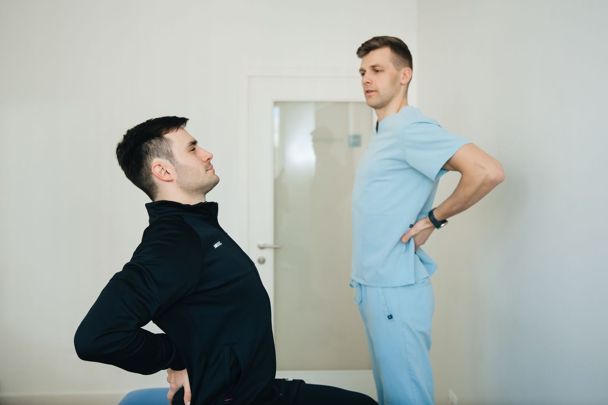

General Physiotherapy
Individualized physiotherapy care for pain, movement limitations and functional recovery.
Personalized physiotherapy and rehabilitation care in Ghatkopar East, Mumbai.
At Dr. Pooja Yadav Physiotherapy & Fitness Clinic, treatment is focused on understanding your condition, creating a personalized approach, and helping you progress toward better movement and recovery.

Every patient is different. The clinic focuses on understanding the individual's concerns and providing a personalized physiotherapy approach rather than treating every condition the same way.
Physiotherapy should be tailored to the person's condition, movement limitations and recovery goals. Patient feedback frequently highlights personalized treatment, attentive listening, professional care, friendly staff and support throughout recovery.
Learn MoreThoughtfully structured physiotherapy support for pain, mobility, function and recovery needs at a physiotherapy clinic in Ghatkopar East.
Individualized physiotherapy care for pain, movement limitations and functional recovery.
Support for common musculoskeletal and orthopedic conditions affecting movement and daily activities.
Structured physiotherapy support following surgery to help restore movement, strength and function.
Targeted physiotherapy to help improve shoulder mobility, function and movement.
Physiotherapy support for back-related problems and movement limitations.
Assessment and exercise-based rehabilitation for neck pain and mobility concerns.
Physiotherapy support for knee pain, movement and functional recovery.
Movement and rehabilitation support for people looking to return to activity safely.
Physiotherapy may help manage movement-related concerns and support day-to-day function.
Treatment is approached around the individual's condition and goals.
Patients describe the clinic as attentive, supportive and welcoming.
Rehabilitation is centered around improving movement, function and everyday quality of life.
Patient feedback frequently highlights professionalism and knowledgeable care.
Located in Pant Nagar, making the clinic convenient for nearby Mumbai residents.
Highly positive online patient feedback with a 5.0 rating on the supplied Google Maps listing.
Based on recurring themes from the supplied public review summary, without fabricated testimonials.
Personalized treatment and attention to detail.
Attentive and friendly staff.
Very supportive throughout the recovery journey.
Patients report improvement in pain, mobility and function.
Understand your concerns, movement and functional limitations.
Develop an approach suited to your condition and goals.
Work through appropriate exercises and rehabilitation under professional guidance.
Track improvements in movement, function and confidence.
Treatment and recovery timelines vary from person to person.
Share your details and the clinic can follow up. This form sends an appointment request; it does not confirm a booking automatically.
Phone: 091363 90413
Landmark: Behind Ganesh Mandir & opposite Arun Vaidya Maidan.
Clinic hours may vary. Please call 091363 90413 to confirm availability and appointment timings.
The clinic is located at Building 13, Shop No. 6, Indrayani CHS Ltd, Pant Nagar, Ghatkopar East, Mumbai 400075.
Call 091363 90413 or submit the appointment request form.
The clinic provides physiotherapy and rehabilitation support for musculoskeletal and movement-related concerns, including back pain, neck pain, knee problems, shoulder conditions, frozen shoulder, tennis elbow and post-surgical rehabilitation.
Appointments are recommended. Please call the clinic to confirm availability.
Physiotherapy is commonly used as part of rehabilitation after surgery. Your individual treatment plan should be determined by a qualified healthcare professional based on your condition.
Recovery varies depending on the condition, severity, individual factors and consistency with the rehabilitation plan. Your physiotherapist can provide a more personalized estimate.
The clinic is in Pant Nagar, Ghatkopar East, behind Ganesh Mandir and opposite Arun Vaidya Maidan.
Speak with the clinic to discuss your physiotherapy needs.